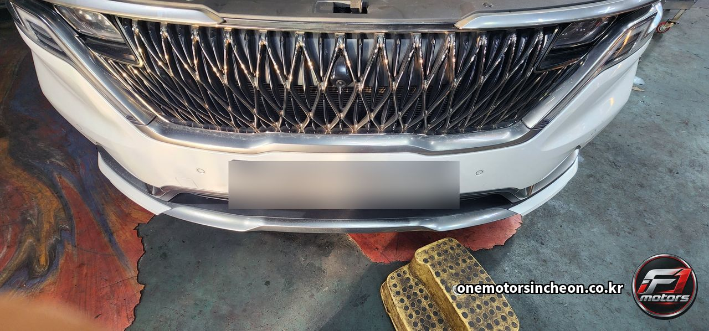
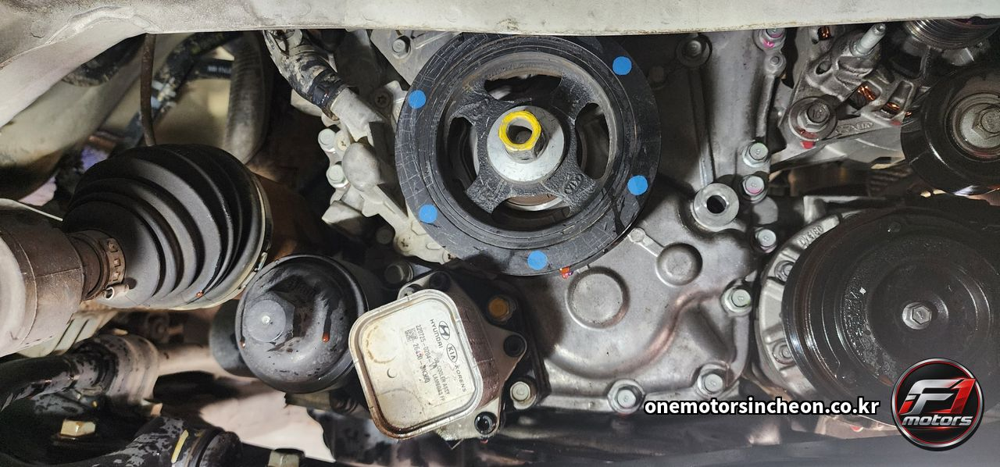
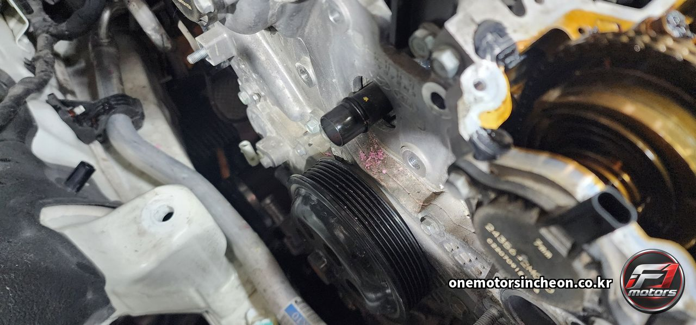
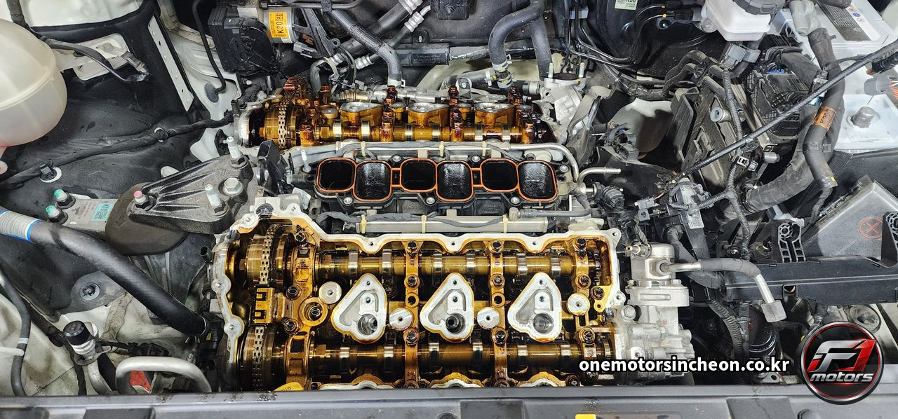
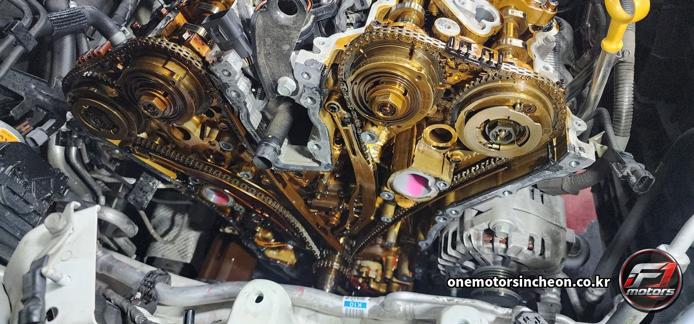
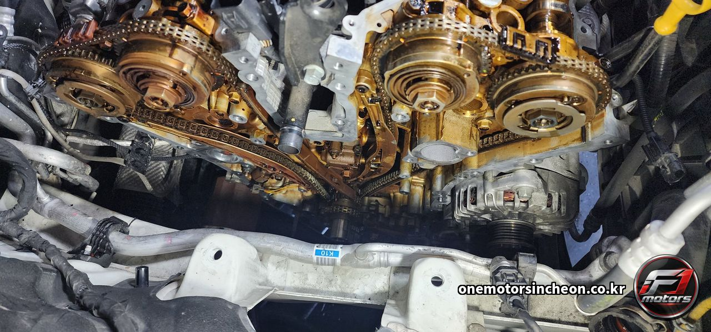
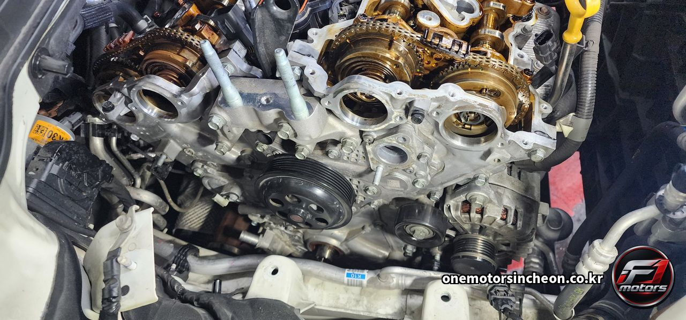
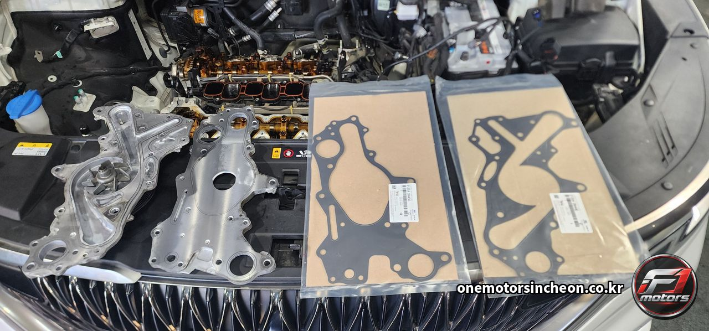
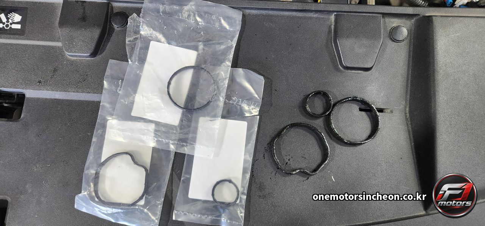
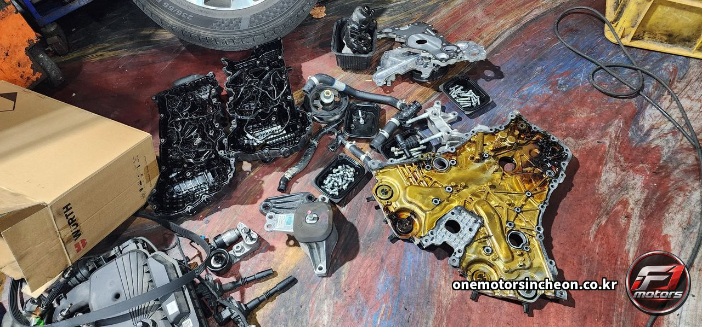

고장사례 및 검색 › 카니발 YP
기아 카니발 YP 가솔린 V6 엔진 누유 — 프런트케이스 누유 작업과 실린더헤드커버 가스켓 좌 · 우, 워터펌프 가스켓 교환
- 차량
- 기아 카니발 YP
- 증상
- 엔진 누유로 입고하셨습니다. 엔진 앞쪽 프런트케이스와 양쪽 실린더헤드커버에서 오일이 배어 나오고 있었습니다
- 원인
- 가솔린 V6는 엔진이 가로로 누워 들어갑니다. 실린더가 두 줄로 벌어져 있어서 덮개도, 가스켓도 전부 좌 · 우 두 벌입니다. 한쪽이 새기 시작했다면 반대쪽도 같은 세월을 견딘 부품이라, 한 쪽만 갈고 덮는 일은 거의 없습니다.
이 차는 새는 곳이 두 갈래였습니다. 하나는 엔진 윗면을 덮는 실린더헤드커버 가스켓 좌 · 우, 다른 하나는 엔진 앞면 전체를 막고 있는 프런트케이스입니다.
프런트케이스는 타이밍체인을 덮고 있는 큰 알루미늄 덮개입니다. 이 자리가 새면 작업 범위가 확 커집니다. 앞을 가리고 있는 것들을 전부 내려야 덮개에 손이 닿기 때문입니다. 구동벨트, 크랭크 풀리, 워터펌프까지 길에 걸리는 것은 다 나옵니다. 사진을 순서대로 보시면 엔진 앞이 어디까지 열리는지 그대로 보입니다.
여기서 한 가지는 같이 가는 게 맞습니다. 워터펌프입니다. 프런트케이스를 들어내면 워터펌프 가스켓 자리가 같이 열립니다. 지금 멀쩡하다고 그대로 덮으면, 나중에 거기서 냉각수가 비칠 때 이 작업을 처음부터 다시 해야 합니다. 같은 공임을 두 번 내는 셈이라 열린 김에 가스켓을 새로 넣었습니다.
덮개를 열면 타이밍체인과 캠샤프트가 드러납니다. 사진에 체인과 캠 페이저가 보이는 장면이 그것입니다. 조립할 때 체인 타이밍이 한 칸만 어긋나도 엔진이 제대로 돌지 않기 때문에, 이 작업은 분해보다 다시 맞춰 넣는 쪽이 어렵습니다.
마무리로 오일 씰과 오링, 아웃렛 가스켓 좌 · 우, 오일필터 가스켓까지 새것으로 넣고 엔진오일과 부동액을 채운 뒤 시동 걸어 누유를 다시 확인했습니다.
엔진 누유는 보이는 자리부터 손대면 멀쩡한 부품을 바꾸고도 기름이 그대로 떨어집니다. 어디서 시작해 어디로 번졌는지를 먼저 잡고 들어가야 합니다. - 수리내역
- 엔진 누유 점검 — 프런트케이스와 실린더헤드커버 좌 · 우 확인 · 구동벨트 · 크랭크 풀리 탈거 · 실린더헤드커버 좌 · 우 탈거 후 가스켓 · 이너가스켓 교환 · 프런트케이스 탈거 후 누유 작업 · 타이밍체인 · 캠 페이저 상태 확인 · 워터펌프 가스켓 교환 · 오일 씰 · 오링 · 아웃렛 가스켓 좌 · 우 교환 · 오일필터 가스켓 교환 · 타이밍 맞춰 재조립 · 엔진오일 · 부동액 보충 · 시동 후 누유 재점검
- 교환부품
- 실린더헤드커버 가스켓 좌 · 우 · 실린더헤드커버 이너가스켓 좌 · 우 · 워터펌프 가스켓 · 오일 씰 · 오링 · 아웃렛 가스켓 좌 · 우 · 오일필터 가스켓 · 흡기 쿨런트 · 엔진오일 · 부동액
정비 사진 10장










이런 증상으로 찾아오십니다
- 카니발 엔진 누유
- 카니발 YP 누유
- 카니발 엔진오일 샘
- 카니발 가솔린 누유
- 실린더헤드커버 가스켓 누유
- 실린더헤드커버 가스켓 교환
- 헤드커버 가스켓 좌우 교환
- 헤드커버 이너가스켓
- 프런트케이스 누유
- 프런트케이스 누유 작업
- 타이밍커버 누유
- V6 엔진 누유
- 람다 엔진 누유
- 워터펌프 가스켓 누유
- 워터펌프 가스켓 교환
- 아웃렛 가스켓 누유
- 오일필터 가스켓 누유
- 크랭크 풀리 탈거
- 타이밍체인 커버 열어보기
- 캠 페이저
- 엔진 위쪽이 기름으로 번져 있어요
- 엔진룸에서 기름 타는 냄새가 나요
- 엔진 앞쪽이 젖어 있어요
- 시동 끄면 기름 냄새가 올라와요
- 엔진오일이 줄어드는데 바닥엔 자국이 없어요
- 헤드커버 가스켓만 갈면 되나요
- 프런트케이스 누유는 꼭 다 뜯어야 하나요
- 워터펌프도 같이 갈아야 하나요
- 타이밍체인 커버 열면 체인도 갈아야 하나요
- 누유 자리가 두 군데인데 한 번에 되나요
- 카니발 누유 수리 되나요
- V6 엔진 누유 수리 가능한가요
- 승합차 엔진 누유 수리
- 인천 카니발 정비
- 인천 카니발 엔진 누유 수리
- 인천 헤드커버 가스켓 교환
- 인천 프런트케이스 누유
- 인천 가솔린 엔진 정비
- 제물포구 자동차정비
- 인천 송림동 정비소
- 인천 승합차 정비
- F1모터스
- 인천에프원모터스
비슷한 증상이 있으시면 전화로 상담해 주세요. 차종과 연식, 증상만 알려주시면 예상 원인을 안내해 드립니다.
인천에프원모터스는 제조사 공식 서비스센터가 아닌 독립 정비업체입니다. 정비 내용은 차량 상태에 따라 달라질 수 있습니다.